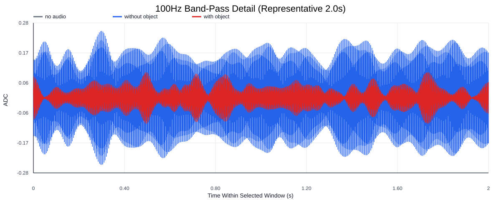
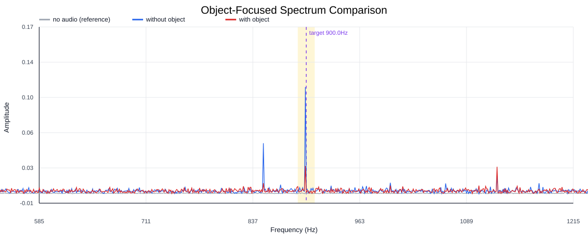
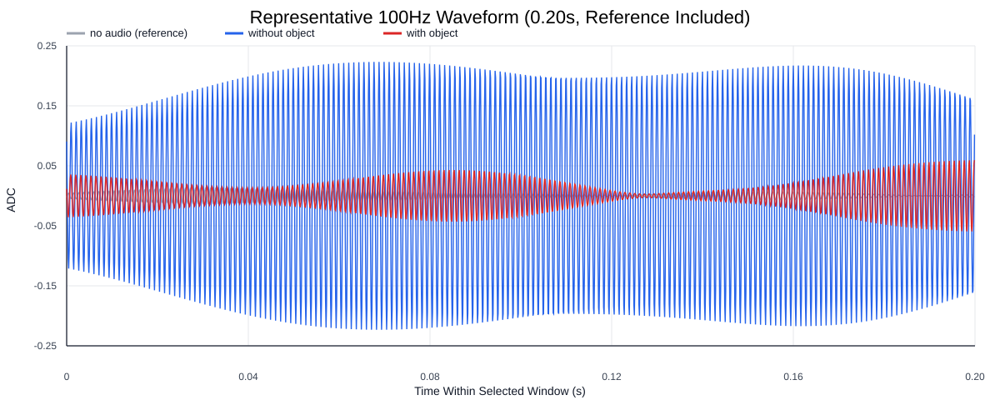
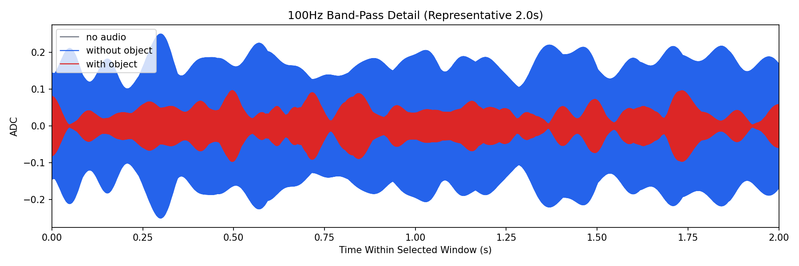
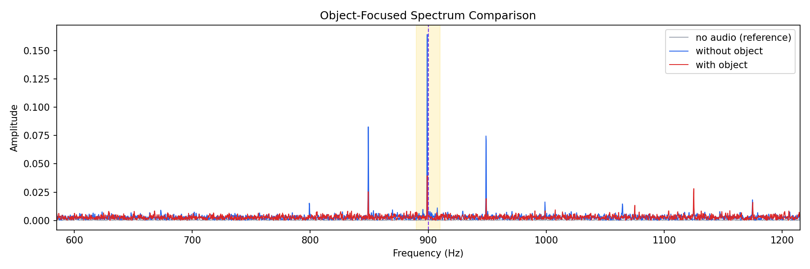
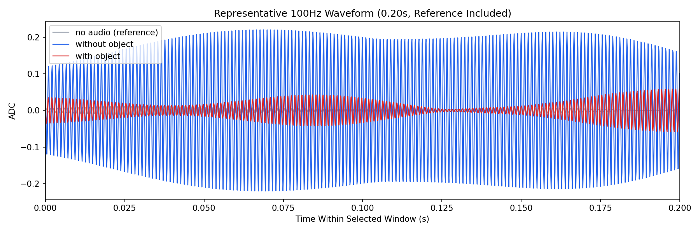

Background: F:\项目类文件夹\异物检测4.10\Data_Dual\frequency_sweep\0900Hz\repeat_04\raw\no_audio.csv
Without object: F:\项目类文件夹\异物检测4.10\Data_Dual\frequency_sweep\0900Hz\repeat_04\raw\without_object.csv
With object: F:\项目类文件夹\异物检测4.10\Data_Dual\frequency_sweep\0900Hz\repeat_04\raw\with_object.csv
| Metric | 无音频 | 100Hz无异物 | 100Hz有异物 | 无异物/无音频 | 有异物/无异物 | 有异物/无音频 |
|---|---|---|---|---|---|---|
| centered_rms | 0.046927 | 0.318340 | 0.309071 | 6.7838 | 0.9709 | 6.5863 |
| raw_target_amp | 0.000487 | 0.004130 | 0.001122 | 8.4896 | 0.2717 | 2.3065 |
| filtered_rms | 0.003089 | 0.122784 | 0.034761 | 39.7454 | 0.2831 | 11.2523 |
| filtered_target_amp | 0.000487 | 0.004130 | 0.001122 | 8.4896 | 0.2717 | 2.3065 |
| filtered_energy_ratio | 0.004334 | 0.148766 | 0.012650 | 34.3263 | 0.0850 | 2.9188 |
| window_filtered_target_amp_mean | 0.003380 | 0.169466 | 0.044510 | 50.1387 | 0.2626 | 13.1689 |
| window_filtered_target_amp_std | 0.002527 | 0.037333 | 0.018798 | 14.7743 | 0.5035 | 7.4391 |





